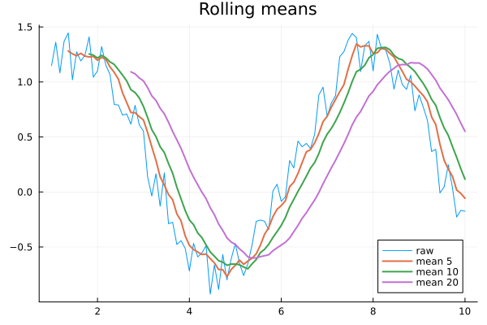
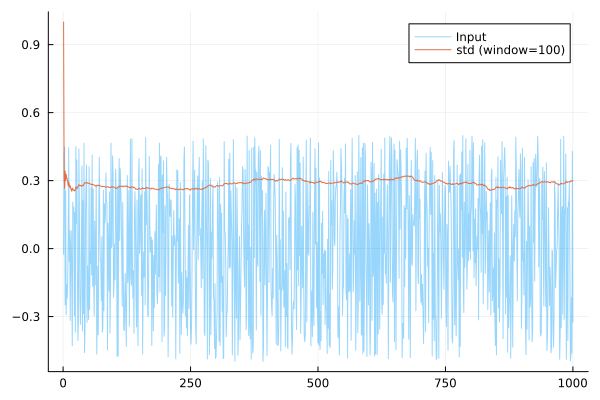

Examples
Rolling mean
Here we show a computation of the rolling mean over fixed windows. We could use a FixedWindowAssociativeOp to keep track of a rolling sum, then divide by the window length, only including values where the window has filled.
using AssociativeWindowAggregation
using Plots
x = range(1, 10; length=100)
y = sin.(x) + 0.5 * rand(length(x))
plot(x, y; label="raw", title="Rolling means")
for window in [5, 10, 20]
# Use this to keep track of a windowed sum.
state = FixedWindowAssociativeOp{Float64,+}(window)
z = []
for value in y
update_state!(state, value)
if window_full(state)
push!(z, window_value(state) / window)
else
push!(z, NaN)
end
end
plot!(x, z; label="mean $window", lw=2)
end
However, if we were to be using very large windows, we should be nervous with the implementation above. This is because, by taking the ratio of two large numbers, we may suffer a loss of precision.
Here is a better implementation, where we create a new object Mean, whcih internally stores a mean and a count. We then define a merge function, which is binary and associative.
struct Mean
n::Int64
mean::Float64
end
Mean(x::Real) = Mean(1, x)
"""
merge(x::Mean, y::Mean) -> Mean
Combine two `Mean` objects into a new `Mean`.
"""
function merge(x::Mean, y::Mean)
n = x.n + y.n
return Mean(n, (x.n / n) * x.mean + (y.n / n) * y.mean)
end
plot(x, y; label="raw", title="Rolling means")
for window in [5, 10, 20]
# Unlike in the previous example, we now combine our custom `Mean` object.
state = FixedWindowAssociativeOp{Mean,merge}(window)
z = []
for value in y
# Wrap individual values in a `Mean` to allow us to add them to the window.
update_state!(state, Mean(value))
if window_full(state)
# `window_value` returns a `Mean` object now, so we must extract the mean.
push!(z, window_value(state).mean)
else
push!(z, NaN)
end
end
plot!(x, z; label="mean $window", lw=2)
endOnlineStats.jl
Many of the estimators from OnlineStats.jl can be merged associatively. Therefore, we can compute online windowed versions of these statistics easily with this framework.
Here is a simple example computing an online windowed standard deviation.
using AssociativeWindowAggregation
using OnlineStatsBase
using Plots
using Statistics
# Use a window of 100 values.
state = FixedWindowAssociativeOp{Variance,merge,merge!}(100)
function _wrap(v)
x = Variance()
fit!(x, v)
return x
end
values = rand(1000) .- 0.5
output = [std(window_value(update_state!(state, _wrap(v)))) for v in values]
plot(values; alpha=0.4, label="Input")
plot!(output; label="std (window=100)")